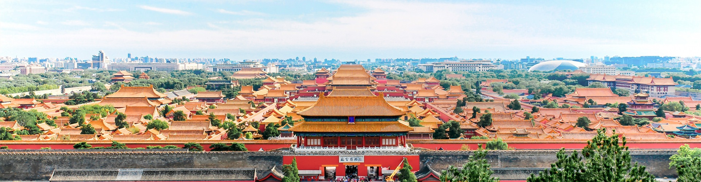

01 / PACK & CHECK
出发前，打个勾
清单自动保存在当前浏览器。
从红墙金瓦，走进胡同烟火。
三天，把脚步交给北京，把时间留给自己。

路线已经排好，快乐即刻出发。
时间为计划安排，请根据现场情况灵活调整。
清单自动保存在当前浏览器。
同福斋（三里屯·东大桥店）准确地址及营业情况需核实；羲和雅苑、方砖厂炸酱面及烤鸦儿李记涮肉的具体门店也请出发前确认。16:40 为到达银锭桥等候日落的计划时间，实际日落与天气另行查询。
远距离优先地铁；景点相邻路段步行。景山到同福斋、南锣鼓巷到北海南门建议打车。地图按钮打开地点搜索，请确认正确入口与门店。
北京市朝阳区 · 工体北路 21 号
在地图中查找 ↗把酒店地址存好，逛累了就回去。
入住与退房时间以酒店确认为准。
行程有终点，
秋天的记忆没有。